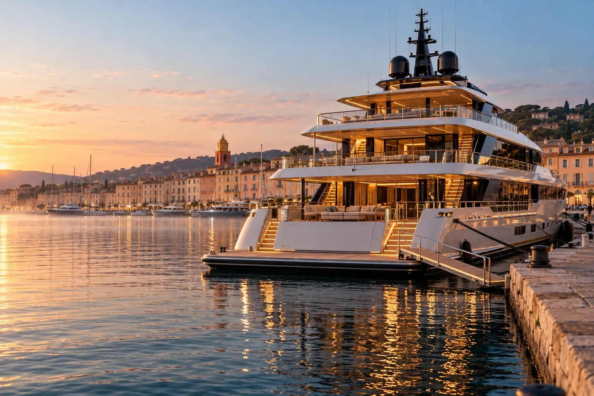
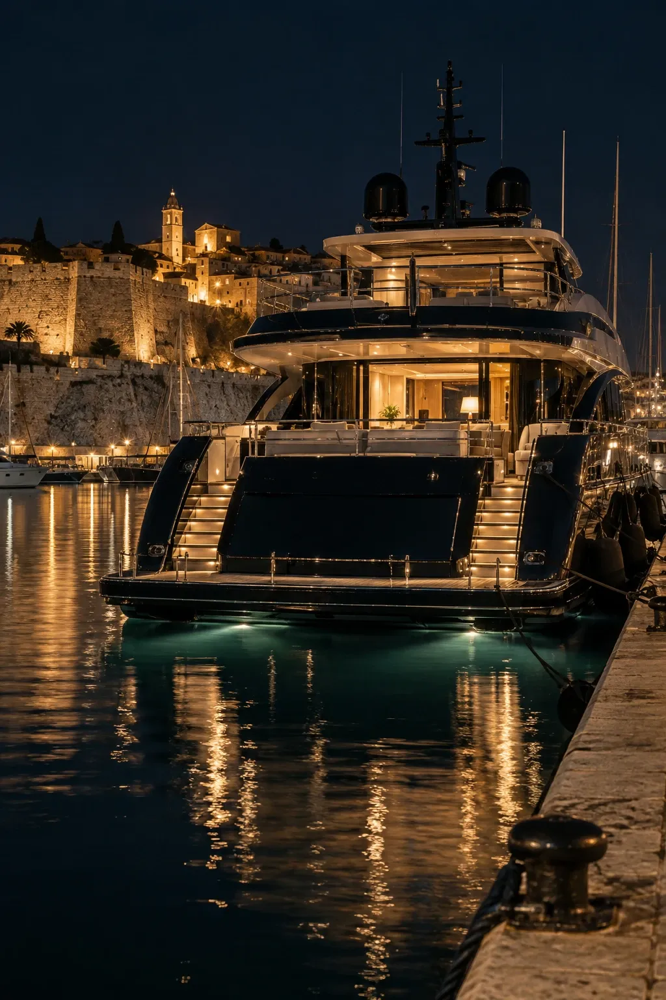

Kauf, Verkauf und Suche von Yachten
Eine Yacht kaufen
Wir finden das Boot, bevor es angeboten wird, besichtigen es vor Ihnen und bleiben an Ihrer Seite bis zur ersten Ausfahrt.
- Yachten zum Verkauf
- 3
- unserer Verkäufe diskret
- 1/3
- Sprachen im Büro
- 4
Drei Boote statt dreißig. Wir waren an Bord jedes einzelnen, kennen seine Geschichte und sagen Ihnen auch, was die Anzeigen verschweigen.
Zu verkaufen
3 Yachten, von 7,9 bis 42 Millionen Euro
Jede wurde von unseren Maklern besichtigt und probegefahren. Weitere, nie inserierte Yachten stellen wir Ihnen nach Vereinbarung vor.


Unsere Begleitung
Von der Suche bis zur Schlüsselübergabe
Ein einziger Ansprechpartner vom ersten Termin bis zur ersten Ausfahrt, und darüber hinaus.
-
01
Das Anforderungsprofil
Wie Sie segeln und fahren, Ihre Gäste, Ihre Reviere, Ihr Budget für Kauf und Unterhalt. Eine Stunde, die Monate der Suche erspart.
-
02
Die Suche
Der inserierte Markt und vor allem der, der es nicht ist: Ein Drittel unserer Verkäufe wird abgeschlossen, bevor etwas online erscheint.
-
03
Die Besichtigungen
Wir gehen vor Ihnen an Bord, dann mit Ihnen. Sie sehen nur die Boote, die die Reise wert sind.
-
04
Das Angebot
Verhandlung, MYBA-Standardvorvertrag, Anzahlung von 10 % auf einem Treuhandkonto: der Rahmen, der Käufer und Verkäufer schützt.
-
05
Probefahrt und Gutachten
Eine Ausfahrt mit dem Kapitän, dann ein unabhängiges Gutachten von Rumpf und Maschinen, vor jeder endgültigen Verpflichtung.
-
06
Flagge und Crew
Wahl der Flagge mit Ihren Beratern, Registrierung, Versicherung und die Auswahl eines Kapitäns, dem Sie vertrauen.
-
07
Die Schlüsselübergabe
Das Boot ist bereit, die Crew ebenso. Wir sind für die erste Saison da, und für alle folgenden.
Die Kosten einer Yacht
Was eine Yacht im Jahr kostet
Ein Richtwert der Branche: etwa 10 % ihres Wertes pro Jahr. Verschieben Sie den Regler, um die Größenordnung zu sehen.
2 M€60 M€
Geschätzte jährliche Kosten
bis
Größenordnung für eine neuere Motoryacht, die im Sommer im Mittelmeer unterwegs ist. Eine Vercharterung von rund zehn Wochen pro Saison kann einen großen Teil davon decken.

Verkaufen
Ihre Yacht verkaufen, mit aller Diskretion
Vertrauliche Bewertung innerhalb von 72 Stunden. Öffentlicher oder diskreter Verkauf, an Käufer, die wir bereits begleiten.
Häufige Fragen
Vor dem Kauf
Braucht man einen Makler, um eine Yacht zu kaufen?
Es ist keine Pflicht, aber der Makler prüft, was die Anzeige nicht sagt: die Vorgeschichte, den tatsächlichen Zustand, die steuerliche Situation und die Boote, die nie inseriert werden.
Wer zahlt die Maklerprovision?
Nach Branchenbrauch trägt der Verkäufer die Verkaufsprovision. Für den Käufer kommt unsere Begleitung nicht zum Preis hinzu.
Welche Kosten kommen zum Kaufpreis hinzu?
Das unabhängige Gutachten, Registrierung und Flagge, gegebenenfalls Zölle oder Mehrwertsteuer je nach Status des Bootes und die erste Inbetriebnahme. Wir beziffern sie vor dem Angebot.
Was kostet eine Yacht im Jahr?
Etwa 10 % ihres Wertes, je nach Größe, Alter und Nutzung: Crew, Wartung, Versicherung, Liegeplatz und Treibstoff. Der Rechner oben zeigt die Größenordnung.
Kann man die eigene Yacht verchartern, um die Kosten zu senken?
Ja. Rund zehn Charterwochen pro Saison decken oft einen großen Teil der Betriebskosten. Wir übernehmen das Chartermanagement und die Buchungen.
Wie lange dauert ein Kauf?
In der Regel ein bis drei Monate, von der ersten Besichtigung bis zur Schlüsselübergabe: die Zeit für Gutachten, Probefahrt und Formalitäten.
Kann man aus dem Ausland kaufen?
Ja. Wir organisieren Besichtigungen per Video, das Gutachten und die Formalitäten und empfangen Sie zur Probefahrt. Wir arbeiten auf Französisch, Englisch, Deutsch und Italienisch.
Suchauftrag erteilen
Beschreiben Sie uns die Yacht, die Sie suchen
Ein Makler ruft Sie innerhalb von 24 Stunden mit einer ersten Auswahl zurück, inseriert oder nicht.